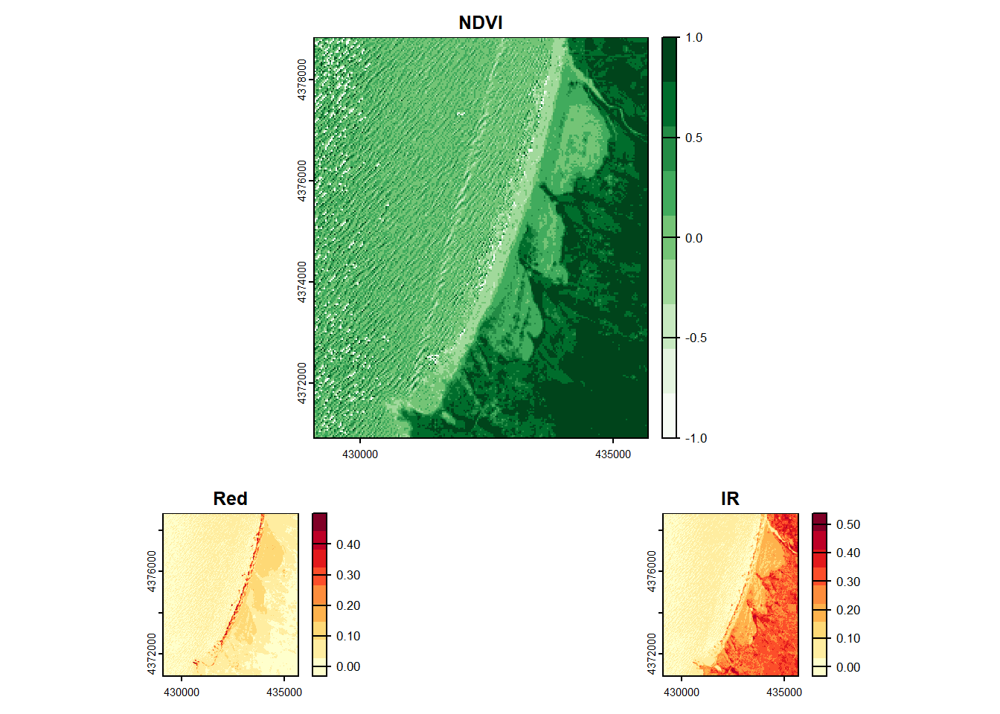

# Install Packages - only need to do this once
#install.packages(c("rstac", "terra", "RColorBrewer", "getPass", "earthdatalogin"))STAC Catalog Workshop
Downloading Satellite Data from SpatioTemporal Asset Catalogs (STAC)
Authors:
Michele Tobias, PhD - University of California Davis DataLab
Alex Mandel, PhD - Development Seed
In this workshop, we’ll use NASA’s Earthdata repository to learn how to:
Get access to a STAC Catalog
Search the catalog
Download data from the catalog
Perform a basic analysis
Study Site
In this tutorial, we’ll be working with data from 10 Mile Dunes, a large coastal dune field in northern California. Why this area? Coastal California has many of the challenges you might face when working with satellite imagery. The one many people will encounter is cloud cover. Another is scatter from water or other irregular natural surfaces. This area also has a variety of land cover, including ocean, California coastal scrub, active sandy dunes, agriculture, and built up areas. But really, Michele just wanted to explore this area because she researches beach and dune plants. You can modify the code to work with your own area of interest.
Set Up Your Project
Configure Your Environment & Set Up Authentication
To get access to NASA Earthdata, you need sign up for a free Earthdata Login account: https://urs.earthdata.nasa.gov/
This is a one time step. Once you have an account you’ll be able to access most public NASA data - through the web, with compatible applications, or with code. After today, you might need to occasionally revisit this URL to manage your account; e.g. to reset your password, or configure extra optional features.
Install and Load Libraries
First, we need to install any R libraries we want to use. You only need to do this once per computer.
Next, we need to load those libraries. You might assume that if we install the library, we want to use it, but R doesn’t automatically load libraries you just installed.
# Load Libraries
library(rstac) # interact with stac catalogsWarning: package 'rstac' was built under R version 4.3.1library(terra) # work with raster dataWarning: package 'terra' was built under R version 4.3.1terra 1.7.55library(RColorBrewer) # color pallets from Color Brewer, a library of colors designed for optimized readability in cartograhyWarning: package 'RColorBrewer' was built under R version 4.3.1library(getPass) # allows us to give the code our password without it printing to the consoleWarning: package 'getPass' was built under R version 4.3.1library(earthdatalogin) # lets us authenticate to access NASA dataWarning: package 'earthdatalogin' was built under R version 4.3.2Configure the GDAL Library
GDAL is the library that allows your computer to read many spatial data formats and can translate one format to another. For example, you can read a shapefile into your code and save it as a geopackage thanks to GDAL. We need to change some of the settings in the way the library works for this R session. These are performance modifications for using internet files. You can read about the settings in the GDAL documentation. Don’t worry; it won’t change how GDAL works with your other geospatial programs.
# GDAL optimization for working with cloud-optimized data
setGDALconfig("GDAL_DISABLE_READDIR_ON_OPEN", "EMPTY_DIR")
setGDALconfig("CPL_VSIL_CURL_ALLOWED_EXTENSIONS", "TIF") Authenticate NASA Earthdata
“Authenticate” is a fancy word meaning “log in” or “prove you should have access”. We’ll do this by calling a function that uses your Earthdata username and password. We’ve set up the code to ask you for these items so you don’t have to store them in code that might be shared in public repositories. But this means you’ll need to pay attention and set it here or the rest of the code won’t run (because you won’t be authenticated).
First the code asks for our credentials.
earthdata_username <- getPass("Earthdata User:")Please enter password in TK window (Alt+Tab)earthdata_password <- getPass("Earthdata Password:")Please enter password in TK window (Alt+Tab)# note: adding forcemask=FALSE would let you see the values as you type. We intentionally hid that for security of the presentation.Now we run the authentication function inputting our username and password:
earthdatalogin::edl_netrc(username = earthdata_username, password = earthdata_password)Search Harmonized Landsat Sentinel (HSL) Data
The Harmonized Landsat Sentinel, aka HLS, dataset is a collaboration between NASA and USGS that uses ESA’s Sentinel 2 data to fill in time gaps of the Landsat 8 satellite. This allows us to get data data every 2 to 3 days instead of the usual 8 days. Which is great when you’re trying to find a day without cloud cover.
To start we need to find the STAC catalog URL for HLS data. Finding the data using NASA’s EarthData Search website provides use with a lot of information. https://search.earthdata.nasa.gov/search?q=C2021957295-LPCLOUD
This told us the name of the collection, HLSS30.v2.0, and which DAAC it’s hosted at, LPDAAC, whose catalog is listed on https://cmr.earthdata.nasa.gov/stac as LPCLOUD.
Now it’s time to search for some data. First, we need to connect to the Landsat STAC catalog endpoint.
https://cmr.earthdata.nasa.gov/stac/LPCLOUD
# connect to the stac endpoint we want to query
nasa_stac <- stac("https://cmr.earthdata.nasa.gov/stac/LPCLOUD")Now let’s define our geographic area of interest as the area that includes 10 Mile Dunes:
# We need bbox defined for STAC queries
# minimum longitude, minimum latitude, maximum longitude, and maximum latitude ---> 10 Mile Dunes
bbox = c( -123.824405, 39.485343, -123.748531, 39.556319)
# Later we'll need the same bbox as a Terra extent object for reading data
extent = ext(c(bbox[1],bbox[3],bbox[2],bbox[4]))
plot(extent, col="lightblue") #ok, this is perhaps not that interesting, but sometimes it's nice to have proof you did something correctly by plotting itThen it’s time do setup our STAC search parameters: STAC URL, collection name, bounding box (bbox), time interval, and limit how many items we want to find.
search_hls <- stac_search(
q = nasa_stac, # The STAC API connection we made earlier
collections = "HLSS30.v2.0", # https://lpdaac.usgs.gov/products/hlss30v002/
bbox = bbox, #bounding box that we made eariler
datetime = "2023-06-01T00:00:00Z/2023-07-30T00:00:00Z", # A closed interval: e.g. "2018-02-12T00:00:00Z/2018-03-18T12:31:12Z"
limit = 100 #limits how many results we see
)With the parameters now set we can run the search. (Note: NASA’s STAC needs a “post”, many other STAC servers can use “get” requests.)
results_hls <- post_request(search_hls)
results_hls###STACItemCollection
- matched feature(s): 12
- features (12 item(s) / 0 not fetched):
- HLS.S30.T10SDJ.2023152T185921.v2.0
- HLS.S30.T10SDJ.2023157T185919.v2.0
- HLS.S30.T10SDJ.2023162T185921.v2.0
- HLS.S30.T10SDJ.2023167T185919.v2.0
- HLS.S30.T10SDJ.2023172T185921.v2.0
- HLS.S30.T10SDJ.2023177T185919.v2.0
- HLS.S30.T10SDJ.2023182T185921.v2.0
- HLS.S30.T10SDJ.2023187T185919.v2.0
- HLS.S30.T10SDJ.2023192T185921.v2.0
- HLS.S30.T10SDJ.2023197T185919.v2.0
- HLS.S30.T10SDJ.2023202T185921.v2.0
- HLS.S30.T10SDJ.2023207T185919.v2.0
- assets:
B01, B02, B03, B04, B05, B06, B07, B08, B09, B10, B11, B12, B8A, browse, Fmask, metadata, SAA, SZA, VAA, VZA
- item's fields:
assets, bbox, collection, geometry, id, links, properties, stac_extensions, stac_version, typeGreat, we have 12 results. Let’s inspect the first element of the results to see what it looks like.
results_hls$features[[1]]###STACItem
- id: HLS.S30.T10SDJ.2023152T185921.v2.0
- collection: HLSS30.v2.0
- bbox: xmin: -124.16763, ymin: 38.75519, xmax: -122.88607, ymax: 39.75027
- datetime: 2023-06-01T19:13:44.387Z
- assets:
B01, B02, B03, B04, B05, B06, B07, B08, B09, B10, B11, B12, B8A, browse, Fmask, metadata, SAA, SZA, VAA, VZA
- item's fields:
assets, bbox, collection, geometry, id, links, properties, stac_extensions, stac_version, typeAnd, let’s look at the properties of this first item, to see what other metadata it contains.
results_hls$features[[1]]$properties$`eo:cloud_cover`
[1] 1
$datetime
[1] "2023-06-01T19:13:44.387Z"
$start_datetime
[1] "2023-06-01T19:13:44.387Z"
$end_datetime
[1] "2023-06-01T19:13:44.387Z"We can see what the cloud cover property is called in the STAC record based on this output. Let’s look at the cloud cover property, something that will be important for images in a coastal area.
results_hls$features[[1]]$properties$`eo:cloud_cover`[1] 1This scene only has 1% cloud cover over the whole image, that’s fantastic. Now we can filter our results to only include scenes with low cloud cover by filtering the metadata returned in our search.
results_hls <- items_filter(results_hls, properties$`eo:cloud_cover` < 10)
results_hls###STACItemCollection
- matched feature(s): 12
- features (4 item(s) / 8 not fetched):
- HLS.S30.T10SDJ.2023152T185921.v2.0
- HLS.S30.T10SDJ.2023172T185921.v2.0
- HLS.S30.T10SDJ.2023202T185921.v2.0
- HLS.S30.T10SDJ.2023207T185919.v2.0
- assets:
B01, B02, B03, B04, B05, B06, B07, B08, B09, B10, B11, B12, B8A, browse, Fmask, metadata, SAA, SZA, VAA, VZA
- item's fields:
assets, bbox, collection, geometry, id, links, properties, stac_extensions, stac_version, typeNow we have 4 of the 12 items with cloud cover less than 10%.
So now we want to know what assets, aka files, are available for a given item. You can think of “assets” as bands of an image or different layers of information. USGS has more information on the HLS website about the specifics.
Reading the printout above we can see:
- assets: B01, B02, B03, B04, B05, B06, B07, B08, B09, B10, B11, B12, B8A, browse, Fmask, metadata, SAA, SZA, VAA, VZA
Now looking at the assets, there are 20 for each item, and we’ll need to decide which of those we actually need to use in the analysis.
ANALYSIS Using HLS
Normalized Difference Vegetation Index (NDVI) is an index commonly used to investigate vegetation health. You may already be familiar with this tool. Another similar index, Normalized Difference Water Index (NDWI), is used to understand the water content of plants or soils in remotely sensed imagery. It might seem counter-intuitive, but sandy dunes hold a lot of water. We’ll use NDWI to help us differentiate the dunes from other substrate in our images.
First, we’ll set which assets we’re interested in so we don’t have to download all the assets.
Reminder: Items have assets - example: item = photo, asset = a specific band
items <- assets_select(results_hls,
asset_names = c(
"B03", #green: 530 – 590 nm
"B04", #red: 640 – 670 nm
"B8A" #Near-IR narrow: 850 – 880 nm
))Now we’ll get the URLs for the assets. URLs are how we’ll request the assets from the API.
urls<-assets_url(items)
urls [1] "https://data.lpdaac.earthdatacloud.nasa.gov/lp-prod-protected/HLSS30.020/HLS.S30.T10SDJ.2023152T185921.v2.0/HLS.S30.T10SDJ.2023152T185921.v2.0.B03.tif"
[2] "https://data.lpdaac.earthdatacloud.nasa.gov/lp-prod-protected/HLSS30.020/HLS.S30.T10SDJ.2023172T185921.v2.0/HLS.S30.T10SDJ.2023172T185921.v2.0.B03.tif"
[3] "https://data.lpdaac.earthdatacloud.nasa.gov/lp-prod-protected/HLSS30.020/HLS.S30.T10SDJ.2023202T185921.v2.0/HLS.S30.T10SDJ.2023202T185921.v2.0.B03.tif"
[4] "https://data.lpdaac.earthdatacloud.nasa.gov/lp-prod-protected/HLSS30.020/HLS.S30.T10SDJ.2023207T185919.v2.0/HLS.S30.T10SDJ.2023207T185919.v2.0.B03.tif"
[5] "https://data.lpdaac.earthdatacloud.nasa.gov/lp-prod-protected/HLSS30.020/HLS.S30.T10SDJ.2023152T185921.v2.0/HLS.S30.T10SDJ.2023152T185921.v2.0.B04.tif"
[6] "https://data.lpdaac.earthdatacloud.nasa.gov/lp-prod-protected/HLSS30.020/HLS.S30.T10SDJ.2023172T185921.v2.0/HLS.S30.T10SDJ.2023172T185921.v2.0.B04.tif"
[7] "https://data.lpdaac.earthdatacloud.nasa.gov/lp-prod-protected/HLSS30.020/HLS.S30.T10SDJ.2023202T185921.v2.0/HLS.S30.T10SDJ.2023202T185921.v2.0.B04.tif"
[8] "https://data.lpdaac.earthdatacloud.nasa.gov/lp-prod-protected/HLSS30.020/HLS.S30.T10SDJ.2023207T185919.v2.0/HLS.S30.T10SDJ.2023207T185919.v2.0.B04.tif"
[9] "https://data.lpdaac.earthdatacloud.nasa.gov/lp-prod-protected/HLSS30.020/HLS.S30.T10SDJ.2023152T185921.v2.0/HLS.S30.T10SDJ.2023152T185921.v2.0.B8A.tif"
[10] "https://data.lpdaac.earthdatacloud.nasa.gov/lp-prod-protected/HLSS30.020/HLS.S30.T10SDJ.2023172T185921.v2.0/HLS.S30.T10SDJ.2023172T185921.v2.0.B8A.tif"
[11] "https://data.lpdaac.earthdatacloud.nasa.gov/lp-prod-protected/HLSS30.020/HLS.S30.T10SDJ.2023202T185921.v2.0/HLS.S30.T10SDJ.2023202T185921.v2.0.B8A.tif"
[12] "https://data.lpdaac.earthdatacloud.nasa.gov/lp-prod-protected/HLSS30.020/HLS.S30.T10SDJ.2023207T185919.v2.0/HLS.S30.T10SDJ.2023207T185919.v2.0.B8A.tif"To decide which of these items we want to download, we need to glean information from the file names in the URLs. The letter B followed by a number (or alphanumeric code) tells us the band number. Another part of the file name contains the year.
We can also see that there are 3 bands per scene. To work with one scene we can filter down that URL list to single STAC item.
urls<-assets_url(items$features[[1]])
urls[1] "https://data.lpdaac.earthdatacloud.nasa.gov/lp-prod-protected/HLSS30.020/HLS.S30.T10SDJ.2023152T185921.v2.0/HLS.S30.T10SDJ.2023152T185921.v2.0.B03.tif"
[2] "https://data.lpdaac.earthdatacloud.nasa.gov/lp-prod-protected/HLSS30.020/HLS.S30.T10SDJ.2023152T185921.v2.0/HLS.S30.T10SDJ.2023152T185921.v2.0.B04.tif"
[3] "https://data.lpdaac.earthdatacloud.nasa.gov/lp-prod-protected/HLSS30.020/HLS.S30.T10SDJ.2023152T185921.v2.0/HLS.S30.T10SDJ.2023152T185921.v2.0.B8A.tif"First, let’s configure the Green band as a raster.
(Note: vsi=TRUE tells Terra that the file path is a URL not a local file)
band_green <- rast(urls[1], vsi=TRUE) Now, we need to read only the extent that matches the bounding box. However there’s a slight catch, we need to convert the extent to the same projection as the HLS scene before we read.
# reproject the extent to the HLS scene CRS.
utm_extent <- terra::project(extent, "epsg:4326", crs(band_green))
# Read the data from the URL for the selected extent
band_green_crop <- crop(band_green, utm_extent)Now let’s get the IR and Red bands too.
band_red <- rast(urls[2], vsi=TRUE, win=utm_extent)
band_ir <- rast(urls[3], vsi=TRUE, win=utm_extent)We can calculate Normalized Difference Water Index (NDWI) as:
NDWI = (Green – NIR)/(Green + NIR)
We can write a function in R to calcuate any normalized difference index.
normdiff <- function(x, y) {
(x - y) / (x + y)
}We just need to know which band to submit for the x and y inputs to toggle between indexes like NDWI and NDVI (normalized difference vegetation index).
ndwi = normdiff(band_green_crop, band_ir)
ndvi = normdiff(band_ir, band_red)Let’s look at the histogram of NDWI to understand the output better.
hist(ndwi, breaks = 40)Now let’s look at the summary of the values in our NDWI raster.
summary(ndwi) #<-- ok, so there's some weirdness here Green
Min. :-41.00000
1st Qu.: -0.70168
Median : -0.23700
Mean : -0.29302
3rd Qu.: 0.01481
Max. : 85.66667 There is something odd going on with our values. Why is the minimum -41 and the max 85.6? Shouldn’t the range of this index be [-1,1]? Yes, it should, but the sunlight glinting off the tops of waves in the ocean does odd things. So we’ll have to filter those results out later, since we suspect they are not useful and not indicative of anything we’re interested in.
Let’s check the Green band.
hist(band_green_crop, breaks = 40)Something similar is going on here - do you see the long tail?
NDVI should also have some issues given what we’ve already seen, so let’s look.
hist(ndvi, breaks = 40)summary(ndvi) NIR_Narrow
Min. :-101.00000
1st Qu.: 0.02634
Median : 0.20213
Mean : Inf
3rd Qu.: 0.73665
Max. : Inf PLOT HLS
In this section, we’ll plot the data we’ve downloaded and calculated. We’ll combine plots, apply color palettes, and filter out bad data.
Plot NDWI
We’re to make a plot layout with one big figure at the top, NDWI, and two smaller figures below with the green and nir bands. The first figure takes up 4 cells in the matrix.
We’ll call three different plots to fill in the slots in our layout, using the range parameter to filter out values outside of the range of our indexes. Note that this plot looks better in R Studio rather than Quarto.
layout(matrix(c(1,1,1,1,2,3), ncol=2, nrow=3, byrow=TRUE))
# 1
plot(ndwi, main="NDWI", range=c(-1,1), col=brewer.pal(name='Blues', n=9)) # the range parameter limits the plot to just values in the interval you give - good to filtering out outliers (which happen especially over the ocean)
# 2
plot(band_green_crop, main = "Green", col=brewer.pal(name='Greens', n=9))
# 3
plot(band_ir, main = "IR", col=brewer.pal(name='YlOrRd', n=9))
Do you see the darker blue areas on the land? Those areas are the dune field. They stand out easily from the other soil types surrounding them.
We’ll do a similar process for the NDVI analysis:
# Plot NDVI
layout(matrix(c(1,1,1,1,2,3), ncol=2, nrow=3, byrow=TRUE))
# 1
plot(ndvi, main="NDVI", range=c(-1,1), col=brewer.pal(name='Greens', n=9))
# 2
plot(band_red, main = "Red", col=brewer.pal(name='YlOrRd', n=9))
# 3
plot(band_ir, main = "IR", col=brewer.pal(name='YlOrRd', n=9))
The dunes don’t have a lot of green vegetation, so they look lighter than the surrounding areas. Beach and dune vegetation tend to be more silver or gray in color to reflect excess light, like many Mediterranean plant species growing in harsh condition. However, this means they have reflectance properties more similar to sand than plants so even when vegetation is present, it’s hard to find with NDVI.
Citations & Further Reaading
stac spec tutorial on querying
stac spec tutorial on downloading data
Getting Started with Cloud-Native Harmonized Landsat Sentinel-2 (HLS) Data in R